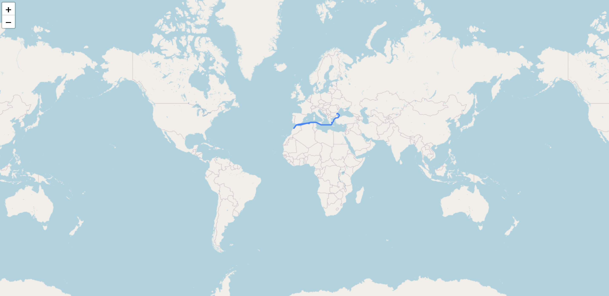

Peter HU
University of Cambridge
Computer Science
Part IA
Contact Details
Email: zh369@cam.ac.uk
Phone: (+44) 07990 719841
CV | LinkedIn | Github | More
|
|
Peter HU University of Cambridge Contact Details Email: zh369@cam.ac.uk Phone: (+44) 07990 719841 CV | LinkedIn | Github | More |
|
|

|
Gold Medal in Huawei Tech Arena 2022 [Programming in C and C++, Compression, Concurrent] In a team of 4, winning £7000 prize. |
|

|

|
Top 2 Team in Mercuria Hackathon 2022 [Python, Data Analysis, Route-Planning] Using data analysis to accelerate the energy transition and reduce the carbon emissions of the maritime industry. |
| Jardine Scholarship ｜ Certificate
Fully-funded Scholarship during my study at University of Cambridge |
Ongoing Project
| Machine Learning [Stanford CS229] ⛵Update: Start from 16/Oct/2022 Project (Github) |
| Operating System [MIT 6.S081] ⛵Update: Start from 14/Oct/2022 |
| Database Design Project (C++) [CMU15-445 Project] Project (Github) | üìùBlog Buffer Pool Management System, Latch, LRU Replacement policy, Buffer Pool Manager Instance. In order to solve the concurrent problem, implement the PARALLEL Buffer Pool Manager. C++ STL Useful Coding Skills: Google C++ Style Guide "logger.h":Debug logging functions for EE / LOG_DEBUG "gtest/gtest.h":Google Unit Testing /** @brief @param @return @author @date @version |
| Introduction to Computer Graphics [MIT6.837 Assignment] Project (Github) | üìùBlog With the help of the Open Course, I have the experience of writing a ray tracer using C++. Throughout the process, I implement two kinds of cameras, orthonormal and perspective camera respectively. In addition, several types of primitive objectives are built, e.g. sphere, triangle, plane, triangle mesh, just to name a few. Even though there is obstacle finishing the task (like the use of depreciated GLUT library), lots of interesting things are learnt. Command-line could help build the project efficiently. Folder .vscode(i.e., settings.json,launch.json,tasks,json and c_cpp_properties.json) helps build and compile the C++ program. What's special is that it also keeps Vscode occupying tiny amount of space on PC compared with other IDE. Useful Coding Skills: Command Line Argument; Using Assert(); On each ".h", #progma once |
| Algorithm and Data Structure [Java, C++] Leetcode, Intro to Algorithms [MIT 6.006 / Also the Third Edition book] Project (Github) |
Previous Project

|
|
Database SQL Query [HW for CMU15-445]
Operate on schema of 6 tables. Use of CTEs (With .. AS) |

|

|
Multifunctional Supermarket Management System [Cpp & OOP
Project]
Using Inheritance(Parent-Child), Polymorphism(Operator Overloading) |
|
|
|
Typing Game [C Programming Project] Graphically Beautiful Interactive Game |
|
Contact Details |
Email: zh369@cam.ac.uk Phone: (+44) 07990 719841 | CV | LinkedIn | Github | More © Copyright 2022 PeterHU. Hosted by GitHub Pages. Last updated: |
{kind=link}